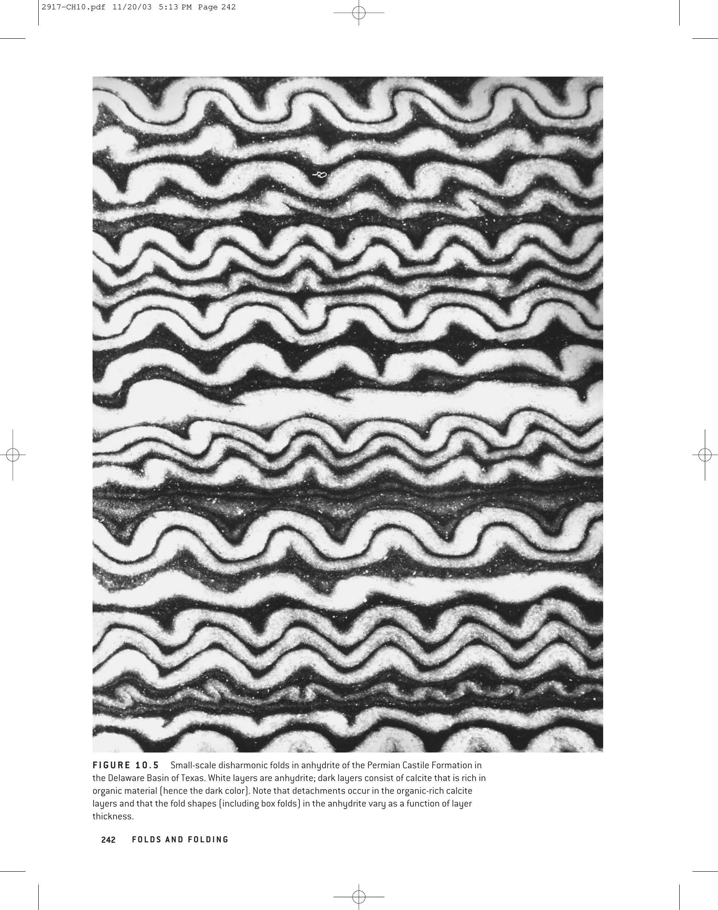

In structural geology, simple cylindrical folds typically possess a single hinge zone where the curvature of the folded surface is maximized, separating two opposing limbs. However, under specific kinematic and mechanical conditions—particularly when two conjugate sets of shear zones or kink bands intersect—structures with more than one hinge line develop. The most prominent example is the Box Fold (also termed a conjugate fold or polyclinal fold).
The flat crestal domain maintains bedding orientation parallel to regional unshortened strata, while deformation is concentrated along the two flanking hinge zones.

| Fold Type | Number of Hinges | Axial Surfaces | Interlimb Angle / Limb Attitude | Mechanical Origin |
|---|---|---|---|---|
| Box Fold | Two (2) | Two conjugate axial surfaces | Broad flat crest; steep opposing outer limbs | Conjugate kink bands or intersecting shear zones |
| Tight Fold | One (1) | Single axial surface | $0^\circ < \theta \le 30^\circ$; limbs converge sharply | High-strain buckle shortening |
| Isoclinal Fold | One (1) | Single axial surface | $\theta \approx 0^\circ$; limbs dip parallel in same direction | Extreme progressive shortening / ductile shear |
| Overturned Fold | One (1) | Single inclined axial surface | Both limbs dip in same direction at unequal angles | Asymmetrical lateral compression / tectonic vergence |
| Diagnostic Parameter | Box Fold | Chevron Fold | Fan Fold | Cylindrical Symmetrical Fold |
|---|---|---|---|---|
| Number of Hinges | Two (2) distinct hinges | One sharp, angular hinge | One rounded, bulbous hinge | One central hinge line |
| Crest / Trough Profile | Broad, horizontal flat roof | V-shaped angular apex | Expanded, mushroom-like head | Smooth parabolic / sine wave |
| Axial Surface Count | Two intersecting conjugate surfaces | Single planar axial surface | Curved / diverging axial planes | Single vertical axial plane |
| Tectonic Environment | Foreland fold-thrust belts (Jura type) | Multilayer buckling with high competency | Extreme deep-seated ductile squeezing | Uniform horizontal regional compression |